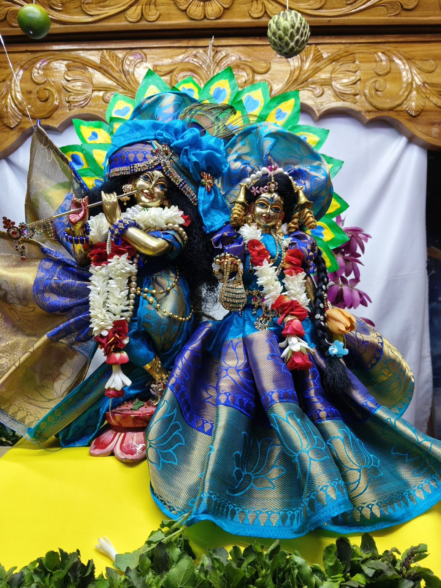
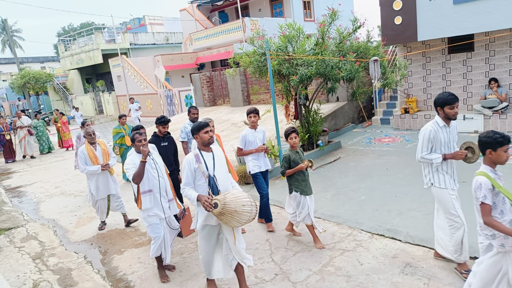

For Youth
Special programs and guidance for young people to grow in Krishna consciousness.
Join UsInternational Society for Krishna Consciousness
A welcoming devotional space for darshan, kirtan, Bhagavad Gita study, family satsang, youth guidance, and temple seva.
రాజంపేట నడిబొడ్డున భక్తి, సేవ మరియు ఆధ్యాత్మిక ఆనందం. దర్శనం, కీర్తన, భగవద్గీత అధ్యయనం, కుటుంబ సత్సంగం, యువత మార్గదర్శనం మరియు ఆలయ సేవ కొరకు ఆహ్వానించదగిన భక్తి ప్రదేశం.
Stay connected with ISKCON Rajampet. Register to receive updates on our activities, festivals, and special events. Click here to register.
Spiritual Knowledge
A tool designed primarily to research the teachings of His Divine Grace A. C. Bhaktivedanta Swami Prabhupada. Anyone who wants to read books, lectures, and spiritual teachings can visit Vedabase directly.
Explore Srila Prabhupada's books and teachings on the official Vedabase website.
Videos
About ISKCON Rajampet
This site is designed in a devotional, modern style inspired by temple websites like ISKCON Chennai, but adapted for Rajampet with your own timings, media, social links, and temple identity.
To spread Krishna consciousness through nama-sankirtana, scriptural wisdom, temple worship, outreach, and compassionate seva.
Temple Timings
Activities and Seva
Vaishnava Calendar
This section includes festival cards based on the Vaishnava Calendar reference you shared, plus a direct button to the full calendar page.
Gallery
Photos from ISKCON Rajampet temple life, deity darshan, festivals, and community programs.

Sri Sri Radha Krishna in beautiful blue alankara.

Sri Chaitanya’s beloved associates.

Devotees chanting and serving through a joyful street procession.

Special festival alankara with flowers, lights, and devotional beauty.

Families and devotees gathered together for kirtan and spiritual association.
Donate
Your donation area is ready for UPI, QR, bank details, and legal notes whenever you send them.
UPI ID, QR image, and bank account details will go here later.
Volunteer / Join Us
Decoration, prasadam seva, altar support, and event help.
Harinam, book distribution, and awareness programs.
Photography, video editing, poster design, and social updates.
Announcements
This works as a simple news board until you want a full dynamic blog later.
Add upcoming posters, special darshan timings, and seva registration updates here.
Add class reminders, visiting devotees, and weekly event highlights here.
Contact and Visit
Tirupati Road, Old Bustand, Chalapati Complex, 2nd Floor
తిరుపతి రోడ్, పాత బస్టాండ్, చలపతి కాంప్లెక్స్, 2వ అంతస్తు